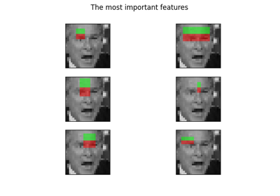
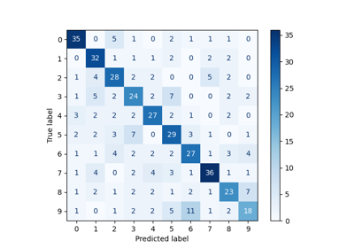
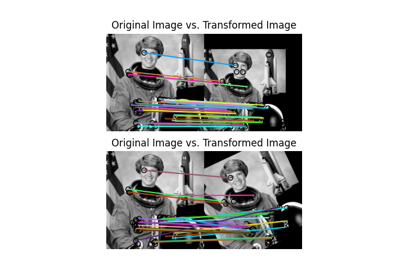
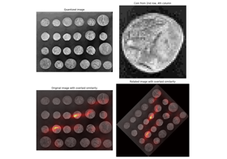

skimage.transform#
This module includes tools to transform images and volumetric data.
Geometric transformation: These transforms change the shape or position of an image. They are useful for tasks such as image registration, alignment, and geometric correction. Examples:
AffineTransform,ProjectiveTransform,EuclideanTransform.Image resizing and rescaling: These transforms change the size or resolution of an image. They are useful for tasks such as down-sampling an image to reduce its size or up-sampling an image to increase its resolution. Examples:
resize(),rescale().Feature detection and extraction: These transforms identify and extract specific features or patterns in an image. They are useful for tasks such as object detection, image segmentation, and feature matching. Examples:
hough_circle(),pyramid_expand(),radon().Image transformation: These transforms change the appearance of an image without changing its content. They are useful for tasks such a creating image mosaics, applying artistic effects, and visualizing image data. Examples:
warp(),iradon().
Down-sample N-dimensional image by local averaging. |
|
Estimate 2D geometric transformation parameters. |
|
Compute the 2-dimensional finite Radon transform (FRT) for the input array. |
|
Perform a circular Hough transform. |
|
Return peaks in a circle Hough transform. |
|
Perform an elliptical Hough transform. |
|
Perform a straight line Hough transform. |
|
Return peaks in a straight line Hough transform. |
|
Compute the 2-dimensional inverse finite Radon transform (iFRT) for the input array. |
|
Integral image / summed area table. |
|
Use an integral image to integrate over a given window. |
|
Inverse radon transform. |
|
Inverse radon transform. |
|
Apply 2D matrix transform. |
|
Order angles to reduce the amount of correlated information in subsequent projections. |
|
Return lines from a progressive probabilistic line Hough transform. |
|
Upsample and then smooth image. |
|
Yield images of the Gaussian pyramid formed by the input image. |
|
Yield images of the laplacian pyramid formed by the input image. |
|
Smooth and then downsample image. |
|
Calculates the radon transform of an image given specified projection angles. |
|
Scale image by a certain factor. |
|
Resize image to match a certain size. |
|
Resize an array with the local mean / bilinear scaling. |
|
Rotate image by a certain angle around its center. |
|
Perform a swirl transformation. |
|
Warp an image according to a given coordinate transformation. |
|
Build the source coordinates for the output of a 2-D image warp. |
|
Remap image to polar or log-polar coordinates space. |
|
Affine transformation. |
|
Essential matrix transformation. |
|
Euclidean transformation, also known as a rigid transform. |
|
Fundamental matrix transformation. |
|
Piecewise affine transformation. |
|
2D polynomial transformation. |
|
Projective transformation. |
|
Similarity transformation. |
|
Thin-plate spline transformation. |
- skimage.transform.downscale_local_mean(image, factors, cval=0, clip=True)[source]#
Down-sample N-dimensional image by local averaging.
The image is padded with cval if it is not perfectly divisible by the integer factors.
In contrast to interpolation in
skimage.transform.resizeandskimage.transform.rescalethis function calculates the local mean of elements in each block of size factors in the input image.- Parameters:
- image(M[, …]) ndarray
Input image.
- factorsarray_like
Array containing down-sampling integer factor along each axis.
- cvalfloat, optional
Constant padding value if image is not perfectly divisible by the integer factors.
- clipbool, optional
Unused, but kept here for API consistency with the other transforms in this module. (The local mean will never fall outside the range of values in the input image, assuming the provided cval also falls within that range.)
- Returns:
- imagendarray
Down-sampled image with same number of dimensions as input image. For integer inputs, the output dtype will be
float64. Seenumpy.mean()for details.
Examples
>>> a = np.arange(15).reshape(3, 5) >>> a array([[ 0, 1, 2, 3, 4], [ 5, 6, 7, 8, 9], [10, 11, 12, 13, 14]]) >>> downscale_local_mean(a, (2, 3)) array([[3.5, 4. ], [5.5, 4.5]])
Rescale, resize, and downscale
Rescale, resize, and downscale
- skimage.transform.estimate_transform(ttype, src, dst, *args, **kwargs)[source]#
Estimate 2D geometric transformation parameters.
You can determine the over-, well- and under-determined parameters with the total least-squares method.
Number of source and destination coordinates must match.
- Parameters:
- ttype{‘euclidean’, similarity’, ‘affine’, ‘piecewise-affine’, ‘projective’, ‘polynomial’}
Type of transform.
- kwargsarray_like or int
Function parameters (src, dst, n, angle):
NAME / TTYPE FUNCTION PARAMETERS 'euclidean' `src, `dst` 'similarity' `src, `dst` 'affine' `src, `dst` 'piecewise-affine' `src, `dst` 'projective' `src, `dst` 'polynomial' `src, `dst`, `order` (polynomial order, default order is 2)Also see examples below.
- Returns:
- tform
_GeometricTransform Transform object containing the transformation parameters and providing access to forward and inverse transformation functions.
- tform
Examples
>>> import numpy as np >>> import skimage as ski
>>> # estimate transformation parameters >>> src = np.array([0, 0, 10, 10]).reshape((2, 2)) >>> dst = np.array([12, 14, 1, -20]).reshape((2, 2))
>>> tform = ski.transform.estimate_transform('similarity', src, dst)
>>> np.allclose(tform.inverse(tform(src)), src) True
>>> # warp image using the estimated transformation >>> image = ski.data.camera()
>>> ski.transform.warp(image, inverse_map=tform.inverse)
>>> # create transformation with explicit parameters >>> tform2 = ski.transform.SimilarityTransform(scale=1.1, rotation=1, ... translation=(10, 20))
>>> # unite transformations, applied in order from left to right >>> tform3 = tform + tform2 >>> np.allclose(tform3(src), tform2(tform(src))) True
- skimage.transform.frt2(a)[source]#
Compute the 2-dimensional finite Radon transform (FRT) for the input array.
- Parameters:
- andarray of int, shape (M, M)
Input array.
- Returns:
- FRTndarray of int, shape (M+1, M)
Finite Radon Transform array of coefficients.
See also
ifrt2The two-dimensional inverse FRT.
Notes
The FRT has a unique inverse if and only if M is prime. [FRT] The idea for this algorithm is due to Vlad Negnevitski.
References
[FRT]A. Kingston and I. Svalbe, “Projective transforms on periodic discrete image arrays,” in P. Hawkes (Ed), Advances in Imaging and Electron Physics, 139 (2006)
Examples
Generate a test image: Use a prime number for the array dimensions
>>> SIZE = 59 >>> img = np.tri(SIZE, dtype=np.int32)
Apply the Finite Radon Transform:
>>> f = frt2(img)
- skimage.transform.hough_circle(image, radius, normalize=True, full_output=False)[source]#
Perform a circular Hough transform.
- Parameters:
- imagendarray, shape (M, N)
Input image with nonzero values representing edges.
- radiusscalar or sequence of scalars
Radii at which to compute the Hough transform. Floats are converted to integers.
- normalizeboolean, optional
Normalize the accumulator with the number of pixels used to draw the radius.
- full_outputboolean, optional
Extend the output size by twice the largest radius in order to detect centers outside the input picture.
- Returns:
- Hndarray, shape (radius index, M + 2R, N + 2R)
Hough transform accumulator for each radius. R designates the larger radius if full_output is True. Otherwise, R = 0.
Examples
>>> from skimage.transform import hough_circle >>> from skimage.draw import circle_perimeter >>> img = np.zeros((100, 100), dtype=bool) >>> rr, cc = circle_perimeter(25, 35, 23) >>> img[rr, cc] = 1 >>> try_radii = np.arange(5, 50) >>> res = hough_circle(img, try_radii) >>> ridx, r, c = np.unravel_index(np.argmax(res), res.shape) >>> r, c, try_radii[ridx] (25, 35, 23)
- skimage.transform.hough_circle_peaks(hspaces, radii, min_xdistance=1, min_ydistance=1, threshold=None, num_peaks=inf, total_num_peaks=inf, normalize=False)[source]#
Return peaks in a circle Hough transform.
Identifies most prominent circles separated by certain distances in given Hough spaces. Non-maximum suppression with different sizes is applied separately in the first and second dimension of the Hough space to identify peaks. For circles with different radius but close in distance, only the one with highest peak is kept.
- Parameters:
- hspaces(M, N, P) array
Hough spaces returned by the
hough_circlefunction.- radii(M,) array
Radii corresponding to Hough spaces.
- min_xdistanceint, optional
Minimum distance separating centers in the x dimension.
- min_ydistanceint, optional
Minimum distance separating centers in the y dimension.
- thresholdfloat, optional
Minimum intensity of peaks in each Hough space. Default is 0.5 * max(hspace).
- num_peaksint, optional
Maximum number of peaks in each Hough space. When the number of peaks exceeds num_peaks, only num_peaks coordinates based on peak intensity are considered for the corresponding radius.
- total_num_peaksint, optional
Maximum number of peaks. When the number of peaks exceeds num_peaks, return num_peaks coordinates based on peak intensity.
- normalizebool, optional
If True, normalize the accumulator by the radius to sort the prominent peaks.
- Returns:
- accum, cx, cy, radtuple of array
Peak values in Hough space, x and y center coordinates and radii.
Notes
Circles with bigger radius have higher peaks in Hough space. If larger circles are preferred over smaller ones, normalize should be False. Otherwise, circles will be returned in the order of decreasing voting number.
Examples
>>> from skimage import transform, draw >>> img = np.zeros((120, 100), dtype=int) >>> radius, x_0, y_0 = (20, 99, 50) >>> y, x = draw.circle_perimeter(y_0, x_0, radius) >>> img[x, y] = 1 >>> hspaces = transform.hough_circle(img, radius) >>> accum, cx, cy, rad = hough_circle_peaks(hspaces, [radius,])
- skimage.transform.hough_ellipse(image, threshold=4, accuracy=1, min_size=4, max_size=None)[source]#
Perform an elliptical Hough transform.
- Parameters:
- image(M, N) ndarray
Input image with nonzero values representing edges.
- thresholdint, optional
Accumulator threshold value. A lower value will return more ellipses.
- accuracydouble, optional
Bin size on the minor axis used in the accumulator. A higher value will return more ellipses, but lead to a less precise estimation of the minor axis lengths.
- min_sizeint, optional
Minimal major axis length.
- max_sizeint, optional
Maximal minor axis length. If None, the value is set to half of the smaller image dimension.
- Returns:
- resultndarray with fields [(accumulator, yc, xc, a, b, orientation)].
Where
(yc, xc)is the center,(a, b)the major and minor axes, respectively. The orientation value follows theskimage.draw.ellipse_perimeterconvention.
Notes
Potential ellipses in the image are characterized by their major and minor axis lengths. For any pair of nonzero pixels in the image that are at least half of min_size apart, an accumulator keeps track of the minor axis lengths of potential ellipses formed with all the other nonzero pixels. If any bin (with bin_size = accuracy * accuracy) in the histogram of those accumulated minor axis lengths is above threshold, the corresponding ellipse is added to the results.
A higher accuracy will therefore lead to more ellipses being found in the image, at the cost of a less precise estimation of the minor axis length.
References
[1]Xie, Yonghong, and Qiang Ji. “A new efficient ellipse detection method.” Pattern Recognition, 2002. Proceedings. 16th International Conference on. Vol. 2. IEEE, 2002
Examples
>>> from skimage.transform import hough_ellipse >>> from skimage.draw import ellipse_perimeter >>> img = np.zeros((25, 25), dtype=np.uint8) >>> rr, cc = ellipse_perimeter(10, 10, 6, 8) >>> img[cc, rr] = 1 >>> result = hough_ellipse(img, threshold=8) >>> result.tolist() [(10, 10.0, 10.0, 8.0, 6.0, 0.0)]
- skimage.transform.hough_line(image, theta=None)[source]#
Perform a straight line Hough transform.
- Parameters:
- image(M, N) ndarray
Input image with nonzero values representing edges.
- thetandarray of double, shape (K,), optional
Angles at which to compute the transform, in radians. Defaults to a vector of 180 angles evenly spaced in the range [-pi/2, pi/2).
- Returns:
- hspacendarray of uint64, shape (P, Q)
Hough transform accumulator.
- anglesndarray
Angles at which the transform is computed, in radians.
- distancesndarray
Distance values.
Notes
The origin is the top left corner of the original image. X and Y axis are horizontal and vertical edges respectively. The distance is the minimal algebraic distance from the origin to the detected line. The angle accuracy can be improved by decreasing the step size in the theta array.
Examples
Generate a test image:
>>> img = np.zeros((100, 150), dtype=bool) >>> img[30, :] = 1 >>> img[:, 65] = 1 >>> img[35:45, 35:50] = 1 >>> for i in range(90): ... img[i, i] = 1 >>> rng = np.random.default_rng() >>> img += rng.random(img.shape) > 0.95
Apply the Hough transform:
>>> out, angles, d = hough_line(img)
- skimage.transform.hough_line_peaks(hspace, angles, dists, min_distance=9, min_angle=10, threshold=None, num_peaks=inf)[source]#
Return peaks in a straight line Hough transform.
Identifies most prominent lines separated by a certain angle and distance in a Hough transform. Non-maximum suppression with different sizes is applied separately in the first (distances) and second (angles) dimension of the Hough space to identify peaks.
- Parameters:
- hspacendarray, shape (M, N)
Hough space returned by the
hough_linefunction.- anglesarray, shape (N,)
Angles returned by the
hough_linefunction. Assumed to be continuous. (angles[-1] - angles[0] == PI).- distsarray, shape (M,)
Distances returned by the
hough_linefunction.- min_distanceint, optional
Minimum distance separating lines (maximum filter size for first dimension of hough space).
- min_angleint, optional
Minimum angle separating lines (maximum filter size for second dimension of hough space).
- thresholdfloat, optional
Minimum intensity of peaks. Default is 0.5 * max(hspace).
- num_peaksint, optional
Maximum number of peaks. When the number of peaks exceeds num_peaks, return num_peaks coordinates based on peak intensity.
- Returns:
- accum, angles, diststuple of array
Peak values in Hough space, angles and distances.
Examples
>>> from skimage.transform import hough_line, hough_line_peaks >>> from skimage.draw import line >>> img = np.zeros((15, 15), dtype=bool) >>> rr, cc = line(0, 0, 14, 14) >>> img[rr, cc] = 1 >>> rr, cc = line(0, 14, 14, 0) >>> img[cc, rr] = 1 >>> hspace, angles, dists = hough_line(img) >>> hspace, angles, dists = hough_line_peaks(hspace, angles, dists) >>> len(angles) 2
- skimage.transform.ifrt2(a)[source]#
Compute the 2-dimensional inverse finite Radon transform (iFRT) for the input array.
- Parameters:
- andarray of int, shape (M+1, M)
Input array.
- Returns:
- iFRTndarray of int, shape (M, M)
Inverse Finite Radon Transform coefficients.
See also
frt2The two-dimensional FRT
Notes
The FRT has a unique inverse if and only if M is prime. See [1] for an overview. The idea for this algorithm is due to Vlad Negnevitski.
References
[1]A. Kingston and I. Svalbe, “Projective transforms on periodic discrete image arrays,” in P. Hawkes (Ed), Advances in Imaging and Electron Physics, 139 (2006)
Examples
>>> SIZE = 59 >>> img = np.tri(SIZE, dtype=np.int32)
Apply the Finite Radon Transform:
>>> f = frt2(img)
Apply the Inverse Finite Radon Transform to recover the input
>>> fi = ifrt2(f)
Check that it’s identical to the original
>>> assert len(np.nonzero(img-fi)[0]) == 0
- skimage.transform.integral_image(image, *, dtype=None)[source]#
Integral image / summed area table.
The integral image contains the sum of all elements above and to the left of it, i.e.:
\[S[m, n] = \sum_{i \leq m} \sum_{j \leq n} X[i, j]\]- Parameters:
- imagendarray
Input image.
- Returns:
- Sndarray
Integral image/summed area table of same shape as input image.
Notes
For better accuracy and to avoid potential overflow, the data type of the output may differ from the input’s when the default dtype of None is used. For inputs with integer dtype, the behavior matches that for
numpy.cumsum(). Floating point inputs will be promoted to at least double precision. The user can set dtype to override this behavior.References
[1]F.C. Crow, “Summed-area tables for texture mapping,” ACM SIGGRAPH Computer Graphics, vol. 18, 1984, pp. 207-212.

Multi-Block Local Binary Pattern for texture classification
Multi-Block Local Binary Pattern for texture classificationFace classification using Haar-like feature descriptor
Face classification using Haar-like feature descriptor
- skimage.transform.integrate(ii, start, end)[source]#
Use an integral image to integrate over a given window.
- Parameters:
- iindarray
Integral image.
- startList of tuples, each tuple of length equal to dimension of ii
Coordinates of top left corner of window(s). Each tuple in the list contains the starting row, col, … index i.e [(row_win1, col_win1, …), (row_win2, col_win2,…), …].
- endList of tuples, each tuple of length equal to dimension of ii
Coordinates of bottom right corner of window(s). Each tuple in the list containing the end row, col, … index i.e [(row_win1, col_win1, …), (row_win2, col_win2, …), …].
- Returns:
- Sscalar or ndarray
Integral (sum) over the given window(s).
See also
integral_imageCreate an integral image / summed area table.
Examples
>>> arr = np.ones((5, 6), dtype=float) >>> ii = integral_image(arr) >>> integrate(ii, (1, 0), (1, 2)) # sum from (1, 0) to (1, 2) array([3.]) >>> integrate(ii, [(3, 3)], [(4, 5)]) # sum from (3, 3) to (4, 5) array([6.]) >>> # sum from (1, 0) to (1, 2) and from (3, 3) to (4, 5) >>> integrate(ii, [(1, 0), (3, 3)], [(1, 2), (4, 5)]) array([3., 6.])
- skimage.transform.iradon(radon_image, theta=None, output_size=None, filter_name='ramp', interpolation='linear', circle=True, preserve_range=True)[source]#
Inverse radon transform.
Reconstruct an image from the radon transform, using the filtered back projection algorithm.
- Parameters:
- radon_imagendarray
Image containing radon transform (sinogram). Each column of the image corresponds to a projection along a different angle. The tomography rotation axis should lie at the pixel index
radon_image.shape[0] // 2along the 0th dimension ofradon_image.- thetaarray, optional
Reconstruction angles (in degrees). Default: m angles evenly spaced between 0 and 180 (if the shape of radon_image is (N, M)).
- output_sizeint, optional
Number of rows and columns in the reconstruction.
- filter_namestr, optional
Filter used in frequency domain filtering. Ramp filter used by default. Filters available: ramp, shepp-logan, cosine, hamming, hann. Assign None to use no filter.
- interpolationstr, optional
Interpolation method used in reconstruction. Methods available: ‘linear’, ‘nearest’, and ‘cubic’ (‘cubic’ is slow).
- circleboolean, optional
Assume the reconstructed image is zero outside the inscribed circle. Also changes the default output_size to match the behaviour of
radoncalled withcircle=True.- preserve_rangebool, optional
Whether to keep the original range of values. Otherwise, the input image is converted according to the conventions of img_as_float. Also see https://scikit-image.org/docs/dev/user_guide/data_types.html
- Returns:
- reconstructedndarray
Reconstructed image. The rotation axis will be located in the pixel with indices
(reconstructed.shape[0] // 2, reconstructed.shape[1] // 2).
Changed in version 0.19: In
iradon,filterargument is deprecated in favor offilter_name.
Notes
It applies the Fourier slice theorem to reconstruct an image by multiplying the frequency domain of the filter with the FFT of the projection data. This algorithm is called filtered back projection.
References
[1]AC Kak, M Slaney, “Principles of Computerized Tomographic Imaging”, IEEE Press 1988.
[2]B.R. Ramesh, N. Srinivasa, K. Rajgopal, “An Algorithm for Computing the Discrete Radon Transform With Some Applications”, Proceedings of the Fourth IEEE Region 10 International Conference, TENCON ‘89, 1989
- skimage.transform.iradon_sart(radon_image, theta=None, image=None, projection_shifts=None, clip=None, relaxation=0.15, dtype=None)[source]#
Inverse radon transform.
Reconstruct an image from the radon transform, using a single iteration of the Simultaneous Algebraic Reconstruction Technique (SART) algorithm.
- Parameters:
- radon_imagendarray, shape (M, N)
Image containing radon transform (sinogram). Each column of the image corresponds to a projection along a different angle. The tomography rotation axis should lie at the pixel index
radon_image.shape[0] // 2along the 0th dimension ofradon_image.- thetaarray, shape (N,), optional
Reconstruction angles (in degrees). Default: m angles evenly spaced between 0 and 180 (if the shape of radon_image is (N, M)).
- imagendarray, shape (M, M), optional
Image containing an initial reconstruction estimate. Default is an array of zeros.
- projection_shiftsarray, shape (N,), optional
Shift the projections contained in
radon_image(the sinogram) by this many pixels before reconstructing the image. The i’th value defines the shift of the i’th column ofradon_image.- cliplength-2 sequence of floats, optional
Force all values in the reconstructed tomogram to lie in the range
[clip[0], clip[1]]- relaxationfloat, optional
Relaxation parameter for the update step. A higher value can improve the convergence rate, but one runs the risk of instabilities. Values close to or higher than 1 are not recommended.
- dtypedtype, optional
Output data type, must be floating point. By default, if input data type is not float, input is cast to double, otherwise dtype is set to input data type.
- Returns:
- reconstructedndarray
Reconstructed image. The rotation axis will be located in the pixel with indices
(reconstructed.shape[0] // 2, reconstructed.shape[1] // 2).
Notes
Algebraic Reconstruction Techniques are based on formulating the tomography reconstruction problem as a set of linear equations. Along each ray, the projected value is the sum of all the values of the cross section along the ray. A typical feature of SART (and a few other variants of algebraic techniques) is that it samples the cross section at equidistant points along the ray, using linear interpolation between the pixel values of the cross section. The resulting set of linear equations are then solved using a slightly modified Kaczmarz method.
When using SART, a single iteration is usually sufficient to obtain a good reconstruction. Further iterations will tend to enhance high-frequency information, but will also often increase the noise.
References
[1]AC Kak, M Slaney, “Principles of Computerized Tomographic Imaging”, IEEE Press 1988.
[2]AH Andersen, AC Kak, “Simultaneous algebraic reconstruction technique (SART): a superior implementation of the ART algorithm”, Ultrasonic Imaging 6 pp 81–94 (1984)
[3]S Kaczmarz, “Angenäherte auflösung von systemen linearer gleichungen”, Bulletin International de l’Academie Polonaise des Sciences et des Lettres 35 pp 355–357 (1937)
[4]Kohler, T. “A projection access scheme for iterative reconstruction based on the golden section.” Nuclear Science Symposium Conference Record, 2004 IEEE. Vol. 6. IEEE, 2004.
[5]Kaczmarz’ method, Wikipedia, https://en.wikipedia.org/wiki/Kaczmarz_method
- skimage.transform.matrix_transform(coords, matrix)[source]#
Apply 2D matrix transform.
- Parameters:
- coords(N, 2) array_like
x, y coordinates to transform
- matrix(3, 3) array_like
Homogeneous transformation matrix.
- Returns:
- coords(N, 2) array
Transformed coordinates.
- skimage.transform.order_angles_golden_ratio(theta)[source]#
Order angles to reduce the amount of correlated information in subsequent projections.
- Parameters:
- thetaarray of floats, shape (M,)
Projection angles in degrees. Duplicate angles are not allowed.
- Returns:
- indices_generatorgenerator yielding unsigned integers
The returned generator yields indices into
thetasuch thattheta[indices]gives the approximate golden ratio ordering of the projections. In total,len(theta)indices are yielded. All non-negative integers <len(theta)are yielded exactly once.
Notes
The method used here is that of the golden ratio introduced by T. Kohler.
References
[1]Kohler, T. “A projection access scheme for iterative reconstruction based on the golden section.” Nuclear Science Symposium Conference Record, 2004 IEEE. Vol. 6. IEEE, 2004.
[2]Winkelmann, Stefanie, et al. “An optimal radial profile order based on the Golden Ratio for time-resolved MRI.” Medical Imaging, IEEE Transactions on 26.1 (2007): 68-76.
- skimage.transform.probabilistic_hough_line(image, threshold=10, line_length=50, line_gap=10, theta=None, rng=None)[source]#
Return lines from a progressive probabilistic line Hough transform.
- Parameters:
- imagendarray, shape (M, N)
Input image with nonzero values representing edges.
- thresholdint, optional
Threshold
- line_lengthint, optional
Minimum accepted length of detected lines. Increase the parameter to extract longer lines.
- line_gapint, optional
Maximum gap between pixels to still form a line. Increase the parameter to merge broken lines more aggressively.
- thetandarray of dtype, shape (K,), optional
Angles at which to compute the transform, in radians. Defaults to a vector of 180 angles evenly spaced in the range [-pi/2, pi/2).
- rng{
numpy.random.Generator, int}, optional Pseudo-random number generator. By default, a PCG64 generator is used (see
numpy.random.default_rng()). If rng is an int, it is used to seed the generator.
- Returns:
- lineslist
List of lines identified, lines in format ((x0, y0), (x1, y1)), indicating line start and end.
References
[1]C. Galamhos, J. Matas and J. Kittler, “Progressive probabilistic Hough transform for line detection”, in IEEE Computer Society Conference on Computer Vision and Pattern Recognition, 1999.
- skimage.transform.pyramid_expand(image, upscale=2, sigma=None, order=1, mode='reflect', cval=0, preserve_range=False, *, channel_axis=None)[source]#
Upsample and then smooth image.
- Parameters:
- imagendarray
Input image.
- upscalefloat, optional
Upscale factor.
- sigmafloat, optional
Sigma for Gaussian filter. Default is 2 * upscale / 6.0 which corresponds to a filter mask twice the size of the scale factor that covers more than 99% of the Gaussian distribution.
- orderint, optional
Order of splines used in interpolation of upsampling. See
skimage.transform.warpfor detail.- mode{‘reflect’, ‘constant’, ‘edge’, ‘symmetric’, ‘wrap’}, optional
The mode parameter determines how the array borders are handled, where cval is the value when mode is equal to ‘constant’.
- cvalfloat, optional
Value to fill past edges of input if mode is ‘constant’.
- preserve_rangebool, optional
Whether to keep the original range of values. Otherwise, the input image is converted according to the conventions of img_as_float. Also see https://scikit-image.org/docs/dev/user_guide/data_types.html
- channel_axisint or None, optional
If None, the image is assumed to be a grayscale (single channel) image. Otherwise, this parameter indicates which axis of the array corresponds to channels.
Added in version 0.19:
channel_axiswas added in 0.19.
- Returns:
- outarray
Upsampled and smoothed float image.
References
- skimage.transform.pyramid_gaussian(image, max_layer=-1, downscale=2, sigma=None, order=1, mode='reflect', cval=0, preserve_range=False, *, channel_axis=None)[source]#
Yield images of the Gaussian pyramid formed by the input image.
Recursively applies the
pyramid_reducefunction to the image, and yields the downscaled images.Note that the first image of the pyramid will be the original, unscaled image. The total number of images is max_layer + 1. In case all layers are computed, the last image is either a one-pixel image or the image where the reduction does not change its shape.
- Parameters:
- imagendarray
Input image.
- max_layerint, optional
Number of layers for the pyramid. 0th layer is the original image. Default is -1 which builds all possible layers.
- downscalefloat, optional
Downscale factor.
- sigmafloat, optional
Sigma for Gaussian filter. Default is 2 * downscale / 6.0 which corresponds to a filter mask twice the size of the scale factor that covers more than 99% of the Gaussian distribution.
- orderint, optional
Order of splines used in interpolation of downsampling. See
skimage.transform.warpfor detail.- mode{‘reflect’, ‘constant’, ‘edge’, ‘symmetric’, ‘wrap’}, optional
The mode parameter determines how the array borders are handled, where cval is the value when mode is equal to ‘constant’.
- cvalfloat, optional
Value to fill past edges of input if mode is ‘constant’.
- preserve_rangebool, optional
Whether to keep the original range of values. Otherwise, the input image is converted according to the conventions of img_as_float. Also see https://scikit-image.org/docs/dev/user_guide/data_types.html
- channel_axisint or None, optional
If None, the image is assumed to be a grayscale (single channel) image. Otherwise, this parameter indicates which axis of the array corresponds to channels.
Added in version 0.19:
channel_axiswas added in 0.19.
- Returns:
- pyramidgenerator
Generator yielding pyramid layers as float images.
References

- skimage.transform.pyramid_laplacian(image, max_layer=-1, downscale=2, sigma=None, order=1, mode='reflect', cval=0, preserve_range=False, *, channel_axis=None)[source]#
Yield images of the laplacian pyramid formed by the input image.
Each layer contains the difference between the downsampled and the downsampled, smoothed image:
layer = resize(prev_layer) - smooth(resize(prev_layer))
Note that the first image of the pyramid will be the difference between the original, unscaled image and its smoothed version. The total number of images is max_layer + 1. In case all layers are computed, the last image is either a one-pixel image or the image where the reduction does not change its shape.
- Parameters:
- imagendarray
Input image.
- max_layerint, optional
Number of layers for the pyramid. 0th layer is the original image. Default is -1 which builds all possible layers.
- downscalefloat, optional
Downscale factor.
- sigmafloat, optional
Sigma for Gaussian filter. Default is 2 * downscale / 6.0 which corresponds to a filter mask twice the size of the scale factor that covers more than 99% of the Gaussian distribution.
- orderint, optional
Order of splines used in interpolation of downsampling. See
skimage.transform.warpfor detail.- mode{‘reflect’, ‘constant’, ‘edge’, ‘symmetric’, ‘wrap’}, optional
The mode parameter determines how the array borders are handled, where cval is the value when mode is equal to ‘constant’.
- cvalfloat, optional
Value to fill past edges of input if mode is ‘constant’.
- preserve_rangebool, optional
Whether to keep the original range of values. Otherwise, the input image is converted according to the conventions of img_as_float. Also see https://scikit-image.org/docs/dev/user_guide/data_types.html
- channel_axisint or None, optional
If None, the image is assumed to be a grayscale (single channel) image. Otherwise, this parameter indicates which axis of the array corresponds to channels.
Added in version 0.19:
channel_axiswas added in 0.19.
- Returns:
- pyramidgenerator
Generator yielding pyramid layers as float images.
References
- skimage.transform.pyramid_reduce(image, downscale=2, sigma=None, order=1, mode='reflect', cval=0, preserve_range=False, *, channel_axis=None)[source]#
Smooth and then downsample image.
- Parameters:
- imagendarray
Input image.
- downscalefloat, optional
Downscale factor.
- sigmafloat, optional
Sigma for Gaussian filter. Default is 2 * downscale / 6.0 which corresponds to a filter mask twice the size of the scale factor that covers more than 99% of the Gaussian distribution.
- orderint, optional
Order of splines used in interpolation of downsampling. See
skimage.transform.warpfor detail.- mode{‘reflect’, ‘constant’, ‘edge’, ‘symmetric’, ‘wrap’}, optional
The mode parameter determines how the array borders are handled, where cval is the value when mode is equal to ‘constant’.
- cvalfloat, optional
Value to fill past edges of input if mode is ‘constant’.
- preserve_rangebool, optional
Whether to keep the original range of values. Otherwise, the input image is converted according to the conventions of img_as_float. Also see https://scikit-image.org/docs/dev/user_guide/data_types.html
- channel_axisint or None, optional
If None, the image is assumed to be a grayscale (single channel) image. Otherwise, this parameter indicates which axis of the array corresponds to channels.
Added in version 0.19:
channel_axiswas added in 0.19.
- Returns:
- outarray
Smoothed and downsampled float image.
References
- skimage.transform.radon(image, theta=None, circle=True, *, preserve_range=False)[source]#
Calculates the radon transform of an image given specified projection angles.
- Parameters:
- imagendarray
Input image. The rotation axis will be located in the pixel with indices
(image.shape[0] // 2, image.shape[1] // 2).- thetaarray, optional
Projection angles (in degrees). If None, the value is set to np.arange(180).
- circleboolean, optional
Assume image is zero outside the inscribed circle, making the width of each projection (the first dimension of the sinogram) equal to
min(image.shape).- preserve_rangebool, optional
Whether to keep the original range of values. Otherwise, the input image is converted according to the conventions of img_as_float. Also see https://scikit-image.org/docs/dev/user_guide/data_types.html
- Returns:
- radon_imagendarray
Radon transform (sinogram). The tomography rotation axis will lie at the pixel index
radon_image.shape[0] // 2along the 0th dimension ofradon_image.
Notes
Based on code of Justin K. Romberg (https://www.clear.rice.edu/elec431/projects96/DSP/bpanalysis.html)
References
[1]AC Kak, M Slaney, “Principles of Computerized Tomographic Imaging”, IEEE Press 1988.
[2]B.R. Ramesh, N. Srinivasa, K. Rajgopal, “An Algorithm for Computing the Discrete Radon Transform With Some Applications”, Proceedings of the Fourth IEEE Region 10 International Conference, TENCON ‘89, 1989
- skimage.transform.rescale(image, scale, order=None, mode='reflect', cval=0, clip=True, preserve_range=False, anti_aliasing=None, anti_aliasing_sigma=None, *, channel_axis=None)[source]#
Scale image by a certain factor.
Performs interpolation to up-scale or down-scale N-dimensional images. Note that anti-aliasing should be enabled when down-sizing images to avoid aliasing artifacts. For down-sampling with an integer factor also see
skimage.transform.downscale_local_mean.- Parameters:
- image(M, N[, …][, C]) ndarray
Input image.
- scale{float, tuple of floats}
Scale factors for spatial dimensions. Separate scale factors can be defined as (m, n[, …]).
- Returns:
- scaledndarray
Scaled version of the input.
- Other Parameters:
- orderint, optional
The order of the spline interpolation, default is 0 if image.dtype is bool and 1 otherwise. The order has to be in the range 0-5. See
skimage.transform.warpfor detail.- mode{‘constant’, ‘edge’, ‘symmetric’, ‘reflect’, ‘wrap’}, optional
Points outside the boundaries of the input are filled according to the given mode. Modes match the behaviour of
numpy.pad.- cvalfloat, optional
Used in conjunction with mode ‘constant’, the value outside the image boundaries.
- clipbool, optional
Whether to clip the output to the range of values of the input image. This is enabled by default, since higher order interpolation may produce values outside the given input range.
- preserve_rangebool, optional
Whether to keep the original range of values. Otherwise, the input image is converted according to the conventions of img_as_float. Also see https://scikit-image.org/docs/dev/user_guide/data_types.html
- anti_aliasingbool, optional
Whether to apply a Gaussian filter to smooth the image prior to down-scaling. It is crucial to filter when down-sampling the image to avoid aliasing artifacts. If input image data type is bool, no anti-aliasing is applied.
- anti_aliasing_sigma{float, tuple of floats}, optional
Standard deviation for Gaussian filtering to avoid aliasing artifacts. By default, this value is chosen as (s - 1) / 2 where s is the down-scaling factor.
- channel_axisint or None, optional
If None, the image is assumed to be a grayscale (single channel) image. Otherwise, this parameter indicates which axis of the array corresponds to channels.
Added in version 0.19:
channel_axiswas added in 0.19.
Notes
Modes ‘reflect’ and ‘symmetric’ are similar, but differ in whether the edge pixels are duplicated during the reflection. As an example, if an array has values [0, 1, 2] and was padded to the right by four values using symmetric, the result would be [0, 1, 2, 2, 1, 0, 0], while for reflect it would be [0, 1, 2, 1, 0, 1, 2].
Examples
>>> from skimage import data >>> from skimage.transform import rescale >>> image = data.camera() >>> rescale(image, 0.1).shape (51, 51) >>> rescale(image, 0.5).shape (256, 256)
Interpolation: Edge ModesRescale, resize, and downscale
Rescale, resize, and downscale
Using Polar and Log-Polar Transformations for Registration
Using Polar and Log-Polar Transformations for Registration
- skimage.transform.resize(image, output_shape, order=None, mode='reflect', cval=0, clip=True, preserve_range=False, anti_aliasing=None, anti_aliasing_sigma=None)[source]#
Resize image to match a certain size.
Performs interpolation to up-size or down-size N-dimensional images. Note that anti-aliasing should be enabled when down-sizing images to avoid aliasing artifacts. For downsampling with an integer factor also see
skimage.transform.downscale_local_mean.- Parameters:
- imagendarray
Input image.
- output_shapeiterable
Size of the generated output image (rows, cols[, …][, dim]). If dim is not provided, the number of channels is preserved. In case the number of input channels does not equal the number of output channels a n-dimensional interpolation is applied.
- Returns:
- resizedndarray
Resized version of the input.
- Other Parameters:
- orderint, optional
The order of the spline interpolation, default is 0 if image.dtype is bool and 1 otherwise. The order has to be in the range 0-5. See
skimage.transform.warpfor detail.- mode{‘constant’, ‘edge’, ‘symmetric’, ‘reflect’, ‘wrap’}, optional
Points outside the boundaries of the input are filled according to the given mode. Modes match the behaviour of
numpy.pad.- cvalfloat, optional
Used in conjunction with mode ‘constant’, the value outside the image boundaries.
- clipbool, optional
Whether to clip the output to the range of values of the input image. This is enabled by default, since higher order interpolation may produce values outside the given input range.
- preserve_rangebool, optional
Whether to keep the original range of values. Otherwise, the input image is converted according to the conventions of img_as_float. Also see https://scikit-image.org/docs/dev/user_guide/data_types.html
- anti_aliasingbool, optional
Whether to apply a Gaussian filter to smooth the image prior to downsampling. It is crucial to filter when downsampling the image to avoid aliasing artifacts. If not specified, it is set to True when downsampling an image whose data type is not bool. It is also set to False when using nearest neighbor interpolation (
order== 0) with integer input data type.- anti_aliasing_sigma{float, tuple of floats}, optional
Standard deviation for Gaussian filtering used when anti-aliasing. By default, this value is chosen as (s - 1) / 2 where s is the downsampling factor, where s > 1. For the up-size case, s < 1, no anti-aliasing is performed prior to rescaling.
Notes
Modes ‘reflect’ and ‘symmetric’ are similar, but differ in whether the edge pixels are duplicated during the reflection. As an example, if an array has values [0, 1, 2] and was padded to the right by four values using symmetric, the result would be [0, 1, 2, 2, 1, 0, 0], while for reflect it would be [0, 1, 2, 1, 0, 1, 2].
Examples
>>> from skimage import data >>> from skimage.transform import resize >>> image = data.camera() >>> resize(image, (100, 100)).shape (100, 100)
Interpolation: Edge ModesRescale, resize, and downscale
Rescale, resize, and downscaleFisher vector feature encoding
Fisher vector feature encoding
- skimage.transform.resize_local_mean(image, output_shape, grid_mode=True, preserve_range=False, *, channel_axis=None)[source]#
Resize an array with the local mean / bilinear scaling.
- Parameters:
- imagendarray
Input image. If this is a multichannel image, the axis corresponding to channels should be specified using channel_axis.
- output_shapeiterable
Size of the generated output image. When channel_axis is not None, the channel_axis should either be omitted from output_shape or the
output_shape[channel_axis]must matchimage.shape[channel_axis]. If the length of output_shape exceeds image.ndim, additional singleton dimensions will be appended to the inputimageas needed.- grid_modebool, optional
Defines
imagepixels position: if True, pixels are assumed to be at grid intersections, otherwise at cell centers. As a consequence, for example, a 1d signal of length 5 is considered to have length 4 when grid_mode is False, but length 5 when grid_mode is True. See the following visual illustration:| pixel 1 | pixel 2 | pixel 3 | pixel 4 | pixel 5 | |<-------------------------------------->| vs. |<----------------------------------------------->|The starting point of the arrow in the diagram above corresponds to coordinate location 0 in each mode.
- preserve_rangebool, optional
Whether to keep the original range of values. Otherwise, the input image is converted according to the conventions of img_as_float. Also see https://scikit-image.org/docs/dev/user_guide/data_types.html
- Returns:
- resizedndarray
Resized version of the input.
See also
Notes
This method is sometimes referred to as “area-based” interpolation or “pixel mixing” interpolation [1]. When grid_mode is True, it is equivalent to using OpenCV’s resize with INTER_AREA interpolation mode. It is commonly used for image downsizing. If the downsizing factors are integers, then
downscale_local_meanshould be preferred instead.References
Examples
>>> from skimage import data >>> from skimage.transform import resize_local_mean >>> image = data.camera() >>> resize_local_mean(image, (100, 100)).shape (100, 100)
- skimage.transform.rotate(image, angle, resize=False, center=None, order=None, mode='constant', cval=0, clip=True, preserve_range=False)[source]#
Rotate image by a certain angle around its center.
- Parameters:
- imagendarray
Input image.
- anglefloat
Rotation angle in degrees in counter-clockwise direction.
- resizebool, optional
Determine whether the shape of the output image will be automatically calculated, so the complete rotated image exactly fits. Default is False.
- centeriterable of length 2
The rotation center. If
center=None, the image is rotated around its center, i.e.center=(cols / 2 - 0.5, rows / 2 - 0.5). Please note that this parameter is (cols, rows), contrary to normal skimage ordering.
- Returns:
- rotatedndarray
Rotated version of the input.
- Other Parameters:
- orderint, optional
The order of the spline interpolation, default is 0 if image.dtype is bool and 1 otherwise. The order has to be in the range 0-5. See
skimage.transform.warpfor detail.- mode{‘constant’, ‘edge’, ‘symmetric’, ‘reflect’, ‘wrap’}, optional
Points outside the boundaries of the input are filled according to the given mode. Modes match the behaviour of
numpy.pad.- cvalfloat, optional
Used in conjunction with mode ‘constant’, the value outside the image boundaries.
- clipbool, optional
Whether to clip the output to the range of values of the input image. This is enabled by default, since higher order interpolation may produce values outside the given input range.
- preserve_rangebool, optional
Whether to keep the original range of values. Otherwise, the input image is converted according to the conventions of img_as_float. Also see https://scikit-image.org/docs/dev/user_guide/data_types.html
Notes
Modes ‘reflect’ and ‘symmetric’ are similar, but differ in whether the edge pixels are duplicated during the reflection. As an example, if an array has values [0, 1, 2] and was padded to the right by four values using symmetric, the result would be [0, 1, 2, 2, 1, 0, 0], while for reflect it would be [0, 1, 2, 1, 0, 1, 2].
Examples
>>> from skimage import data >>> from skimage.transform import rotate >>> image = data.camera() >>> rotate(image, 2).shape (512, 512) >>> rotate(image, 2, resize=True).shape (530, 530) >>> rotate(image, 90, resize=True).shape (512, 512)
Using Polar and Log-Polar Transformations for Registration
Using Polar and Log-Polar Transformations for RegistrationBRIEF binary descriptorSliding window histogram


- skimage.transform.swirl(image, center=None, strength=1, radius=100, rotation=0, output_shape=None, order=None, mode='reflect', cval=0, clip=True, preserve_range=False)[source]#
Perform a swirl transformation.
- Parameters:
- imagendarray
Input image.
- center(column, row) tuple or (2,) ndarray, optional
Center coordinate of transformation.
- strengthfloat, optional
The amount of swirling applied.
- radiusfloat, optional
The extent of the swirl in pixels. The effect dies out rapidly beyond radius.
- rotationfloat, optional
Additional rotation applied to the image.
- Returns:
- swirledndarray
Swirled version of the input.
- Other Parameters:
- output_shapetuple (rows, cols), optional
Shape of the output image generated. By default the shape of the input image is preserved.
- orderint, optional
The order of the spline interpolation, default is 0 if image.dtype is bool and 1 otherwise. The order has to be in the range 0-5. See
skimage.transform.warpfor detail.- mode{‘constant’, ‘edge’, ‘symmetric’, ‘reflect’, ‘wrap’}, optional
Points outside the boundaries of the input are filled according to the given mode, with ‘reflect’ used as the default. Modes match the behaviour of
numpy.pad.- cvalfloat, optional
Used in conjunction with mode ‘constant’, the value outside the image boundaries.
- clipbool, optional
Whether to clip the output to the range of values of the input image. This is enabled by default, since higher order interpolation may produce values outside the given input range.
- preserve_rangebool, optional
Whether to keep the original range of values. Otherwise, the input image is converted according to the conventions of img_as_float. Also see https://scikit-image.org/docs/dev/user_guide/data_types.html

- skimage.transform.warp(image, inverse_map, map_args=None, output_shape=None, order=None, mode='constant', cval=0.0, clip=True, preserve_range=False)[source]#
Warp an image according to a given coordinate transformation.
- Parameters:
- imagendarray
Input image.
- inverse_maptransformation object, callable
cr = f(cr, **kwargs), or ndarray Inverse coordinate map, which transforms coordinates in the output images into their corresponding coordinates in the input image.
There are a number of different options to define this map, depending on the dimensionality of the input image. A 2-D image can have 2 dimensions for gray-scale images, or 3 dimensions with color information.
For 2-D images, you can directly pass a transformation object, e.g.
skimage.transform.SimilarityTransform, or its inverse.For 2-D images, you can pass a
(3, 3)homogeneous transformation matrix, e.g. skimage.transform.SimilarityTransform.params.For 2-D images, a function that transforms a
(M, 2)array of(col, row)coordinates in the output image to their corresponding coordinates in the input image. Extra parameters to the function can be specified through map_args.For N-D images, you can directly pass an array of coordinates. The first dimension specifies the coordinates in the input image, while the subsequent dimensions determine the position in the output image. E.g. in case of 2-D images, you need to pass an array of shape
(2, rows, cols), where rows and cols determine the shape of the output image, and the first dimension contains the(row, col)coordinate in the input image. Seescipy.ndimage.map_coordinatesfor further documentation.
Note, that a
(3, 3)matrix is interpreted as a homogeneous transformation matrix, so you cannot interpolate values from a 3-D input, if the output is of shape(3,).See example section for usage.
- map_argsdict, optional
Keyword arguments passed to inverse_map.
- output_shapetuple (rows, cols), optional
Shape of the output image generated. By default the shape of the input image is preserved. Note that, even for multi-band images, only rows and columns need to be specified.
- orderint, optional
- The order of interpolation. The order has to be in the range 0-5:
0: Nearest-neighbor
1: Bi-linear (default)
2: Bi-quadratic
3: Bi-cubic
4: Bi-quartic
5: Bi-quintic
Default is 0 if image.dtype is bool and 1 otherwise.
- mode{‘constant’, ‘edge’, ‘symmetric’, ‘reflect’, ‘wrap’}, optional
Points outside the boundaries of the input are filled according to the given mode. Modes match the behaviour of
numpy.pad.- cvalfloat, optional
Used in conjunction with mode ‘constant’, the value outside the image boundaries.
- clipbool, optional
Whether to clip the output to the range of values of the input image. This is enabled by default, since higher order interpolation may produce values outside the given input range.
- preserve_rangebool, optional
Whether to keep the original range of values. Otherwise, the input image is converted according to the conventions of img_as_float. Also see https://scikit-image.org/docs/dev/user_guide/data_types.html
- Returns:
- warpeddouble ndarray
The warped input image.
Notes
The input image is converted to a double image.
In case of a
SimilarityTransform,AffineTransformandProjectiveTransformand order in [0, 3] this function uses the underlying transformation matrix to warp the image with a much faster routine.
Examples
>>> from skimage.transform import warp >>> from skimage import data >>> image = data.camera()
The following image warps are all equal but differ substantially in execution time. The image is shifted to the bottom.
Use a geometric transform to warp an image (fast):
>>> from skimage.transform import SimilarityTransform >>> tform = SimilarityTransform(translation=(0, -10)) >>> warped = warp(image, tform)
Use a callable (slow):
>>> def shift_down(xy): ... xy[:, 1] -= 10 ... return xy >>> warped = warp(image, shift_down)
Use a transformation matrix to warp an image (fast):
>>> matrix = np.array([[1, 0, 0], [0, 1, -10], [0, 0, 1]]) >>> warped = warp(image, matrix) >>> from skimage.transform import ProjectiveTransform >>> warped = warp(image, ProjectiveTransform(matrix=matrix))
You can also use the inverse of a geometric transformation (fast):
>>> warped = warp(image, tform.inverse)
For N-D images you can pass a coordinate array, that specifies the coordinates in the input image for every element in the output image. E.g. if you want to rescale a 3-D cube, you can do:
>>> cube_shape = np.array([30, 30, 30]) >>> rng = np.random.default_rng() >>> cube = rng.random(cube_shape)
Setup the coordinate array, that defines the scaling:
>>> scale = 0.1 >>> output_shape = (scale * cube_shape).astype(int) >>> coords0, coords1, coords2 = np.mgrid[:output_shape[0], ... :output_shape[1], :output_shape[2]] >>> coords = np.array([coords0, coords1, coords2])
Assume that the cube contains spatial data, where the first array element center is at coordinate (0.5, 0.5, 0.5) in real space, i.e. we have to account for this extra offset when scaling the image:
>>> coords = (coords + 0.5) / scale - 0.5 >>> warped = warp(cube, coords)
Use thin-plate splines for image warping
Use thin-plate splines for image warpingRegistration using optical flow
Registration using optical flowBRIEF binary descriptor


- skimage.transform.warp_coords(coord_map, shape, dtype=<class 'numpy.float64'>)[source]#
Build the source coordinates for the output of a 2-D image warp.
- Parameters:
- coord_mapcallable like GeometricTransform.inverse
Return input coordinates for given output coordinates. Coordinates are in the shape (P, 2), where P is the number of coordinates and each element is a
(row, col)pair.- shapetuple
Shape of output image
(rows, cols[, bands]).- dtypenp.dtype or string
dtype for return value (sane choices: float32 or float64).
- Returns:
- coords(ndim, rows, cols[, bands]) array of dtype dtype
Coordinates for
scipy.ndimage.map_coordinates, that will yield an image of shape (orows, ocols, bands) by drawing from source points according to the coord_transform_fn.
Notes
This is a lower-level routine that produces the source coordinates for 2-D images used by warp().
It is provided separately from
warpto give additional flexibility to users who would like, for example, to re-use a particular coordinate mapping, to use specific dtypes at various points along the the image-warping process, or to implement different post-processing logic thanwarpperforms after the call to ndi.map_coordinates.Examples
Produce a coordinate map that shifts an image up and to the right:
>>> from skimage import data >>> from scipy.ndimage import map_coordinates >>> >>> def shift_up10_left20(xy): ... return xy - np.array([-20, 10])[None, :] >>> >>> image = data.astronaut().astype(np.float32) >>> coords = warp_coords(shift_up10_left20, image.shape) >>> warped_image = map_coordinates(image, coords)
- skimage.transform.warp_polar(image, center=None, *, radius=None, output_shape=None, scaling='linear', channel_axis=None, **kwargs)[source]#
Remap image to polar or log-polar coordinates space.
- Parameters:
- image(M, N[, C]) ndarray
Input image. For multichannel images channel_axis has to be specified.
- center2-tuple, optional
(row, col) coordinates of the point in image that represents the center of the transformation (i.e., the origin in Cartesian space). Values can be of type float. If no value is given, the center is assumed to be the center point of image.
- radiusfloat, optional
Radius of the circle that bounds the area to be transformed.
- output_shapetuple (row, col), optional
- scaling{‘linear’, ‘log’}, optional
Specify whether the image warp is polar or log-polar. Defaults to ‘linear’.
- channel_axisint or None, optional
If None, the image is assumed to be a grayscale (single channel) image. Otherwise, this parameter indicates which axis of the array corresponds to channels.
Added in version 0.19:
channel_axiswas added in 0.19.- **kwargskeyword arguments
Passed to transform.warp.
- Returns:
- warpedndarray
The polar or log-polar warped image.
Examples
Perform a basic polar warp on a grayscale image:
>>> from skimage import data >>> from skimage.transform import warp_polar >>> image = data.checkerboard() >>> warped = warp_polar(image)
Perform a log-polar warp on a grayscale image:
>>> warped = warp_polar(image, scaling='log')
Perform a log-polar warp on a grayscale image while specifying center, radius, and output shape:
>>> warped = warp_polar(image, (100,100), radius=100, ... output_shape=image.shape, scaling='log')
Perform a log-polar warp on a color image:
>>> image = data.astronaut() >>> warped = warp_polar(image, scaling='log', channel_axis=-1)
Using Polar and Log-Polar Transformations for Registration
Using Polar and Log-Polar Transformations for Registration
- class skimage.transform.AffineTransform(matrix=None, scale=None, rotation=None, shear=None, translation=None, *, dimensionality=2)[source]#
Bases:
ProjectiveTransformAffine transformation.
Has the following form:
X = a0 * x + a1 * y + a2 = sx * x * [cos(rotation) + tan(shear_y) * sin(rotation)] - sy * y * [tan(shear_x) * cos(rotation) + sin(rotation)] + translation_x Y = b0 * x + b1 * y + b2 = sx * x * [sin(rotation) - tan(shear_y) * cos(rotation)] - sy * y * [tan(shear_x) * sin(rotation) - cos(rotation)] + translation_y
where
sxandsyare scale factors in the x and y directions.This is equivalent to applying the operations in the following order:
Scale
Shear
Rotate
Translate
The homogeneous transformation matrix is:
[[a0 a1 a2] [b0 b1 b2] [0 0 1]]
In 2D, the transformation parameters can be given as the homogeneous transformation matrix, above, or as the implicit parameters, scale, rotation, shear, and translation in x (a2) and y (b2). For 3D and higher, only the matrix form is allowed.
In narrower transforms, such as the Euclidean (only rotation and translation) or Similarity (rotation, translation, and a global scale factor) transforms, it is possible to specify 3D transforms using implicit parameters also.
- Parameters:
- matrix(D+1, D+1) array_like, optional
Homogeneous transformation matrix. If this matrix is provided, it is an error to provide any of scale, rotation, shear, or translation.
- scale{s as float or (sx, sy) as array, list or tuple}, optional
Scale factor(s). If a single value, it will be assigned to both sx and sy. Only available for 2D.
Added in version 0.17: Added support for supplying a single scalar value.
- rotationfloat, optional
Rotation angle, clockwise, as radians. Only available for 2D.
- shearfloat or 2-tuple of float, optional
The x and y shear angles, clockwise, by which these axes are rotated around the origin [2]. If a single value is given, take that to be the x shear angle, with the y angle remaining 0. Only available in 2D.
- translation(tx, ty) as array, list or tuple, optional
Translation parameters. Only available for 2D.
- dimensionalityint, optional
The dimensionality of the transform. This is not used if any other parameters are provided.
- Raises:
- ValueError
If both
matrixand any of the other parameters are provided.
References
[1]Wikipedia, “Affine transformation”, https://en.wikipedia.org/wiki/Affine_transformation#Image_transformation
[2]Wikipedia, “Shear mapping”, https://en.wikipedia.org/wiki/Shear_mapping
Examples
>>> import numpy as np >>> import skimage as ski >>> img = ski.data.astronaut()
Define source and destination points:
>>> src = np.array([[150, 150], ... [250, 100], ... [150, 200]]) >>> dst = np.array([[200, 200], ... [300, 150], ... [150, 400]])
Estimate the transformation matrix:
>>> tform = ski.transform.AffineTransform() >>> tform.estimate(src, dst) True
Apply the transformation:
>>> warped = ski.transform.warp(img, inverse_map=tform.inverse)
- Attributes:
- params(D+1, D+1) array
Homogeneous transformation matrix.
- __init__(matrix=None, scale=None, rotation=None, shear=None, translation=None, *, dimensionality=2)[source]#
- BRIEF binary descriptor
- property dimensionality#
The dimensionality of the transformation.
- estimate(src, dst, weights=None)[source]#
Estimate the transformation from a set of corresponding points.
You can determine the over-, well- and under-determined parameters with the total least-squares method.
Number of source and destination coordinates must match.
The transformation is defined as:
X = (a0*x + a1*y + a2) / (c0*x + c1*y + 1) Y = (b0*x + b1*y + b2) / (c0*x + c1*y + 1)
These equations can be transformed to the following form:
0 = a0*x + a1*y + a2 - c0*x*X - c1*y*X - X 0 = b0*x + b1*y + b2 - c0*x*Y - c1*y*Y - Y
which exist for each set of corresponding points, so we have a set of N * 2 equations. The coefficients appear linearly so we can write A x = 0, where:
A = [[x y 1 0 0 0 -x*X -y*X -X] [0 0 0 x y 1 -x*Y -y*Y -Y] ... ... ] x.T = [a0 a1 a2 b0 b1 b2 c0 c1 c3]
In case of total least-squares the solution of this homogeneous system of equations is the right singular vector of A which corresponds to the smallest singular value normed by the coefficient c3.
Weights can be applied to each pair of corresponding points to indicate, particularly in an overdetermined system, if point pairs have higher or lower confidence or uncertainties associated with them. From the matrix treatment of least squares problems, these weight values are normalised, square-rooted, then built into a diagonal matrix, by which A is multiplied.
In case of the affine transformation the coefficients c0 and c1 are 0. Thus the system of equations is:
A = [[x y 1 0 0 0 -X] [0 0 0 x y 1 -Y] ... ... ] x.T = [a0 a1 a2 b0 b1 b2 c3]
- Parameters:
- src(N, 2) array_like
Source coordinates.
- dst(N, 2) array_like
Destination coordinates.
- weights(N,) array_like, optional
Relative weight values for each pair of points.
- Returns:
- successbool
True, if model estimation succeeds.
- property inverse#
Return a transform object representing the inverse.
- residuals(src, dst)[source]#
Determine residuals of transformed destination coordinates.
For each transformed source coordinate the Euclidean distance to the respective destination coordinate is determined.
- Parameters:
- src(N, 2) array
Source coordinates.
- dst(N, 2) array
Destination coordinates.
- Returns:
- residuals(N,) array
Residual for coordinate.
- property rotation#
- property scale#
- property shear#
- property translation#
- class skimage.transform.EssentialMatrixTransform(rotation=None, translation=None, matrix=None, *, dimensionality=2)[source]#
Bases:
FundamentalMatrixTransformEssential matrix transformation.
The essential matrix relates corresponding points between a pair of calibrated images. The matrix transforms normalized, homogeneous image points in one image to epipolar lines in the other image.
The essential matrix is only defined for a pair of moving images capturing a non-planar scene. In the case of pure rotation or planar scenes, the homography describes the geometric relation between two images (
ProjectiveTransform). If the intrinsic calibration of the images is unknown, the fundamental matrix describes the projective relation between the two images (FundamentalMatrixTransform).- Parameters:
- rotation(3, 3) array_like, optional
Rotation matrix of the relative camera motion.
- translation(3, 1) array_like, optional
Translation vector of the relative camera motion. The vector must have unit length.
- matrix(3, 3) array_like, optional
Essential matrix.
References
[1]Hartley, Richard, and Andrew Zisserman. Multiple view geometry in computer vision. Cambridge university press, 2003.
Examples
>>> import numpy as np >>> import skimage as ski >>> >>> tform_matrix = ski.transform.EssentialMatrixTransform( ... rotation=np.eye(3), translation=np.array([0, 0, 1]) ... ) >>> tform_matrix.params array([[ 0., -1., 0.], [ 1., 0., 0.], [ 0., 0., 0.]]) >>> src = np.array([[ 1.839035, 1.924743], ... [ 0.543582, 0.375221], ... [ 0.47324 , 0.142522], ... [ 0.96491 , 0.598376], ... [ 0.102388, 0.140092], ... [15.994343, 9.622164], ... [ 0.285901, 0.430055], ... [ 0.09115 , 0.254594]]) >>> dst = np.array([[1.002114, 1.129644], ... [1.521742, 1.846002], ... [1.084332, 0.275134], ... [0.293328, 0.588992], ... [0.839509, 0.08729 ], ... [1.779735, 1.116857], ... [0.878616, 0.602447], ... [0.642616, 1.028681]]) >>> tform_matrix.estimate(src, dst) True >>> tform_matrix.residuals(src, dst) array([0.42455187, 0.01460448, 0.13847034, 0.12140951, 0.27759346, 0.32453118, 0.00210776, 0.26512283])
- Attributes:
- params(3, 3) array
Essential matrix.
- estimate(src, dst)[source]#
Estimate essential matrix using 8-point algorithm.
The 8-point algorithm requires at least 8 corresponding point pairs for a well-conditioned solution, otherwise the over-determined solution is estimated.
- Parameters:
- src(N, 2) array_like
Source coordinates.
- dst(N, 2) array_like
Destination coordinates.
- Returns:
- successbool
True, if model estimation succeeds.
- property inverse#
Return a transform object representing the inverse.
See Hartley & Zisserman, Ch. 8: Epipolar Geometry and the Fundamental Matrix, for an explanation of why F.T gives the inverse.
- class skimage.transform.EuclideanTransform(matrix=None, rotation=None, translation=None, *, dimensionality=2)[source]#
Bases:
ProjectiveTransformEuclidean transformation, also known as a rigid transform.
Has the following form:
X = a0 * x - b0 * y + a1 = = x * cos(rotation) - y * sin(rotation) + a1 Y = b0 * x + a0 * y + b1 = = x * sin(rotation) + y * cos(rotation) + b1
where the homogeneous transformation matrix is:
[[a0 -b0 a1] [b0 a0 b1] [0 0 1 ]]
The Euclidean transformation is a rigid transformation with rotation and translation parameters. The similarity transformation extends the Euclidean transformation with a single scaling factor.
In 2D and 3D, the transformation parameters may be provided either via matrix, the homogeneous transformation matrix, above, or via the implicit parameters
rotationand/ortranslation(where a1 is the translation along x, b1 along y, etc.). Beyond 3D, if the transformation is only a translation, you may use the implicit parametertranslation; otherwise, you must use matrix.- Parameters:
- matrix(D+1, D+1) array_like, optional
Homogeneous transformation matrix.
- rotationfloat or sequence of float, optional
Rotation angle, clockwise, as radians. If given as a vector, it is interpreted as Euler rotation angles [1]. Only 2D (single rotation) and 3D (Euler rotations) values are supported. For higher dimensions, you must provide or estimate the transformation matrix.
- translation(x, y[, z, …]) sequence of float, length D, optional
Translation parameters for each axis.
- dimensionalityint, optional
The dimensionality of the transform.
References
- Attributes:
- params(D+1, D+1) array
Homogeneous transformation matrix.
- property dimensionality#
The dimensionality of the transformation.
- estimate(src, dst)[source]#
Estimate the transformation from a set of corresponding points.
You can determine the over-, well- and under-determined parameters with the total least-squares method.
Number of source and destination coordinates must match.
- Parameters:
- src(N, 2) array_like
Source coordinates.
- dst(N, 2) array_like
Destination coordinates.
- Returns:
- successbool
True, if model estimation succeeds.
- property inverse#
Return a transform object representing the inverse.
- residuals(src, dst)[source]#
Determine residuals of transformed destination coordinates.
For each transformed source coordinate the Euclidean distance to the respective destination coordinate is determined.
- Parameters:
- src(N, 2) array
Source coordinates.
- dst(N, 2) array
Destination coordinates.
- Returns:
- residuals(N,) array
Residual for coordinate.
- property rotation#
- property translation#
- class skimage.transform.FundamentalMatrixTransform(matrix=None, *, dimensionality=2)[source]#
Bases:
_GeometricTransformFundamental matrix transformation.
The fundamental matrix relates corresponding points between a pair of uncalibrated images. The matrix transforms homogeneous image points in one image to epipolar lines in the other image.
The fundamental matrix is only defined for a pair of moving images. In the case of pure rotation or planar scenes, the homography describes the geometric relation between two images (
ProjectiveTransform). If the intrinsic calibration of the images is known, the essential matrix describes the metric relation between the two images (EssentialMatrixTransform).- Parameters:
- matrix(3, 3) array_like, optional
Fundamental matrix.
References
[1]Hartley, Richard, and Andrew Zisserman. Multiple view geometry in computer vision. Cambridge university press, 2003.
Examples
>>> import numpy as np >>> import skimage as ski >>> tform_matrix = ski.transform.FundamentalMatrixTransform()
Define source and destination points:
>>> src = np.array([1.839035, 1.924743, ... 0.543582, 0.375221, ... 0.473240, 0.142522, ... 0.964910, 0.598376, ... 0.102388, 0.140092, ... 15.994343, 9.622164, ... 0.285901, 0.430055, ... 0.091150, 0.254594]).reshape(-1, 2) >>> dst = np.array([1.002114, 1.129644, ... 1.521742, 1.846002, ... 1.084332, 0.275134, ... 0.293328, 0.588992, ... 0.839509, 0.087290, ... 1.779735, 1.116857, ... 0.878616, 0.602447, ... 0.642616, 1.028681]).reshape(-1, 2)
Estimate the transformation matrix:
>>> tform_matrix.estimate(src, dst) True >>> tform_matrix.params array([[-0.21785884, 0.41928191, -0.03430748], [-0.07179414, 0.04516432, 0.02160726], [ 0.24806211, -0.42947814, 0.02210191]])
Compute the Sampson distance:
>>> tform_matrix.residuals(src, dst) array([0.0053886 , 0.00526101, 0.08689701, 0.01850534, 0.09418259, 0.00185967, 0.06160489, 0.02655136])
Apply inverse transformation:
>>> tform_matrix.inverse(dst) array([[-0.0513591 , 0.04170974, 0.01213043], [-0.21599496, 0.29193419, 0.00978184], [-0.0079222 , 0.03758889, -0.00915389], [ 0.14187184, -0.27988959, 0.02476507], [ 0.05890075, -0.07354481, -0.00481342], [-0.21985267, 0.36717464, -0.01482408], [ 0.01339569, -0.03388123, 0.00497605], [ 0.03420927, -0.1135812 , 0.02228236]])
- Attributes:
- params(3, 3) array
Fundamental matrix.
- estimate(src, dst)[source]#
Estimate fundamental matrix using 8-point algorithm.
The 8-point algorithm requires at least 8 corresponding point pairs for a well-conditioned solution, otherwise the over-determined solution is estimated.
- Parameters:
- src(N, 2) array_like
Source coordinates.
- dst(N, 2) array_like
Destination coordinates.
- Returns:
- successbool
True, if model estimation succeeds.
- property inverse#
Return a transform object representing the inverse.
See Hartley & Zisserman, Ch. 8: Epipolar Geometry and the Fundamental Matrix, for an explanation of why F.T gives the inverse.

- class skimage.transform.PiecewiseAffineTransform[source]#
Bases:
_GeometricTransformPiecewise affine transformation.
Control points are used to define the mapping. The transform is based on a Delaunay triangulation of the points to form a mesh. Each triangle is used to find a local affine transform.
- Attributes:
- affineslist of AffineTransform objects
Affine transformations for each triangle in the mesh.
- inverse_affineslist of AffineTransform objects
Inverse affine transformations for each triangle in the mesh.
- estimate(src, dst)[source]#
Estimate the transformation from a set of corresponding points.
Number of source and destination coordinates must match.
- Parameters:
- src(N, D) array_like
Source coordinates.
- dst(N, D) array_like
Destination coordinates.
- Returns:
- successbool
True, if all pieces of the model are successfully estimated.
- property inverse#
Return a transform object representing the inverse.
- residuals(src, dst)[source]#
Determine residuals of transformed destination coordinates.
For each transformed source coordinate the Euclidean distance to the respective destination coordinate is determined.
- Parameters:
- src(N, 2) array
Source coordinates.
- dst(N, 2) array
Destination coordinates.
- Returns:
- residuals(N,) array
Residual for coordinate.
- class skimage.transform.PolynomialTransform(params=None, *, dimensionality=2)[source]#
Bases:
_GeometricTransform2D polynomial transformation.
Has the following form:
X = sum[j=0:order]( sum[i=0:j]( a_ji * x**(j - i) * y**i )) Y = sum[j=0:order]( sum[i=0:j]( b_ji * x**(j - i) * y**i ))
- Parameters:
- params(2, N) array_like, optional
Polynomial coefficients where N * 2 = (order + 1) * (order + 2). So, a_ji is defined in params[0, :] and b_ji in params[1, :].
- Attributes:
- params(2, N) array
Polynomial coefficients where N * 2 = (order + 1) * (order + 2). So, a_ji is defined in params[0, :] and b_ji in params[1, :].
- estimate(src, dst, order=2, weights=None)[source]#
Estimate the transformation from a set of corresponding points.
You can determine the over-, well- and under-determined parameters with the total least-squares method.
Number of source and destination coordinates must match.
The transformation is defined as:
X = sum[j=0:order]( sum[i=0:j]( a_ji * x**(j - i) * y**i )) Y = sum[j=0:order]( sum[i=0:j]( b_ji * x**(j - i) * y**i ))
These equations can be transformed to the following form:
0 = sum[j=0:order]( sum[i=0:j]( a_ji * x**(j - i) * y**i )) - X 0 = sum[j=0:order]( sum[i=0:j]( b_ji * x**(j - i) * y**i )) - Y
which exist for each set of corresponding points, so we have a set of N * 2 equations. The coefficients appear linearly so we can write A x = 0, where:
A = [[1 x y x**2 x*y y**2 ... 0 ... 0 -X] [0 ... 0 1 x y x**2 x*y y**2 -Y] ... ... ] x.T = [a00 a10 a11 a20 a21 a22 ... ann b00 b10 b11 b20 b21 b22 ... bnn c3]
In case of total least-squares the solution of this homogeneous system of equations is the right singular vector of A which corresponds to the smallest singular value normed by the coefficient c3.
Weights can be applied to each pair of corresponding points to indicate, particularly in an overdetermined system, if point pairs have higher or lower confidence or uncertainties associated with them. From the matrix treatment of least squares problems, these weight values are normalised, square-rooted, then built into a diagonal matrix, by which A is multiplied.
- Parameters:
- src(N, 2) array_like
Source coordinates.
- dst(N, 2) array_like
Destination coordinates.
- orderint, optional
Polynomial order (number of coefficients is order + 1).
- weights(N,) array_like, optional
Relative weight values for each pair of points.
- Returns:
- successbool
True, if model estimation succeeds.
- property inverse#
Return a transform object representing the inverse.
- residuals(src, dst)[source]#
Determine residuals of transformed destination coordinates.
For each transformed source coordinate the Euclidean distance to the respective destination coordinate is determined.
- Parameters:
- src(N, 2) array
Source coordinates.
- dst(N, 2) array
Destination coordinates.
- Returns:
- residuals(N,) array
Residual for coordinate.
- class skimage.transform.ProjectiveTransform(matrix=None, *, dimensionality=2)[source]#
Bases:
_GeometricTransformProjective transformation.
Apply a projective transformation (homography) on coordinates.
For each homogeneous coordinate \(\mathbf{x} = [x, y, 1]^T\), its target position is calculated by multiplying with the given matrix, \(H\), to give \(H \mathbf{x}\):
[[a0 a1 a2] [b0 b1 b2] [c0 c1 1 ]].
E.g., to rotate by theta degrees clockwise, the matrix should be:
[[cos(theta) -sin(theta) 0] [sin(theta) cos(theta) 0] [0 0 1]]
or, to translate x by 10 and y by 20:
[[1 0 10] [0 1 20] [0 0 1 ]].
- Parameters:
- matrix(D+1, D+1) array_like, optional
Homogeneous transformation matrix.
- dimensionalityint, optional
The number of dimensions of the transform. This is ignored if
matrixis not None.
- Attributes:
- params(D+1, D+1) array
Homogeneous transformation matrix.
- property dimensionality#
The dimensionality of the transformation.
- estimate(src, dst, weights=None)[source]#
Estimate the transformation from a set of corresponding points.
You can determine the over-, well- and under-determined parameters with the total least-squares method.
Number of source and destination coordinates must match.
The transformation is defined as:
X = (a0*x + a1*y + a2) / (c0*x + c1*y + 1) Y = (b0*x + b1*y + b2) / (c0*x + c1*y + 1)
These equations can be transformed to the following form:
0 = a0*x + a1*y + a2 - c0*x*X - c1*y*X - X 0 = b0*x + b1*y + b2 - c0*x*Y - c1*y*Y - Y
which exist for each set of corresponding points, so we have a set of N * 2 equations. The coefficients appear linearly so we can write A x = 0, where:
A = [[x y 1 0 0 0 -x*X -y*X -X] [0 0 0 x y 1 -x*Y -y*Y -Y] ... ... ] x.T = [a0 a1 a2 b0 b1 b2 c0 c1 c3]
In case of total least-squares the solution of this homogeneous system of equations is the right singular vector of A which corresponds to the smallest singular value normed by the coefficient c3.
Weights can be applied to each pair of corresponding points to indicate, particularly in an overdetermined system, if point pairs have higher or lower confidence or uncertainties associated with them. From the matrix treatment of least squares problems, these weight values are normalised, square-rooted, then built into a diagonal matrix, by which A is multiplied.
In case of the affine transformation the coefficients c0 and c1 are 0. Thus the system of equations is:
A = [[x y 1 0 0 0 -X] [0 0 0 x y 1 -Y] ... ... ] x.T = [a0 a1 a2 b0 b1 b2 c3]
- Parameters:
- src(N, 2) array_like
Source coordinates.
- dst(N, 2) array_like
Destination coordinates.
- weights(N,) array_like, optional
Relative weight values for each pair of points.
- Returns:
- successbool
True, if model estimation succeeds.
- property inverse#
Return a transform object representing the inverse.
- residuals(src, dst)[source]#
Determine residuals of transformed destination coordinates.
For each transformed source coordinate the Euclidean distance to the respective destination coordinate is determined.
- Parameters:
- src(N, 2) array
Source coordinates.
- dst(N, 2) array
Destination coordinates.
- Returns:
- residuals(N,) array
Residual for coordinate.
- class skimage.transform.SimilarityTransform(matrix=None, scale=None, rotation=None, translation=None, *, dimensionality=2)[source]#
Bases:
EuclideanTransformSimilarity transformation.
Has the following form in 2D:
X = a0 * x - b0 * y + a1 = = s * x * cos(rotation) - s * y * sin(rotation) + a1 Y = b0 * x + a0 * y + b1 = = s * x * sin(rotation) + s * y * cos(rotation) + b1
where
sis a scale factor and the homogeneous transformation matrix is:[[a0 -b0 a1] [b0 a0 b1] [0 0 1 ]]
The similarity transformation extends the Euclidean transformation with a single scaling factor in addition to the rotation and translation parameters.
- Parameters:
- matrix(dim+1, dim+1) array_like, optional
Homogeneous transformation matrix.
- scalefloat, optional
Scale factor. Implemented only for 2D and 3D.
- rotationfloat, optional
Rotation angle, clockwise, as radians. Implemented only for 2D and 3D. For 3D, this is given in ZYX Euler angles.
- translation(dim,) array_like, optional
x, y[, z] translation parameters. Implemented only for 2D and 3D.
- Attributes:
- params(dim+1, dim+1) array
Homogeneous transformation matrix.
- property dimensionality#
The dimensionality of the transformation.
- estimate(src, dst)[source]#
Estimate the transformation from a set of corresponding points.
You can determine the over-, well- and under-determined parameters with the total least-squares method.
Number of source and destination coordinates must match.
- Parameters:
- src(N, 2) array_like
Source coordinates.
- dst(N, 2) array_like
Destination coordinates.
- Returns:
- successbool
True, if model estimation succeeds.
- property inverse#
Return a transform object representing the inverse.
- residuals(src, dst)[source]#
Determine residuals of transformed destination coordinates.
For each transformed source coordinate the Euclidean distance to the respective destination coordinate is determined.
- Parameters:
- src(N, 2) array
Source coordinates.
- dst(N, 2) array
Destination coordinates.
- Returns:
- residuals(N,) array
Residual for coordinate.
- property rotation#
- property scale#
- property translation#
- class skimage.transform.ThinPlateSplineTransform[source]#
Bases:
objectThin-plate spline transformation.
Given two matching sets of points, source and destination, this class estimates the thin-plate spline (TPS) transformation which transforms each point in source into its destination counterpart.
References
[1]Bookstein, Fred L. “Principal warps: Thin-plate splines and the decomposition of deformations,” IEEE Transactions on pattern analysis and machine intelligence 11.6 (1989): 567–585. DOI:10.1109/34.24792 https://user.engineering.uiowa.edu/~aip/papers/bookstein-89.pdf
Examples
>>> import skimage as ski
Define source and destination control points such that they simulate rotating by 90 degrees and generate a meshgrid from them:
>>> src = np.array([[0, 0], [0, 5], [5, 5], [5, 0]]) >>> dst = np.array([[5, 0], [0, 0], [0, 5], [5, 5]])
Estimate the transformation:
>>> tps = ski.transform.ThinPlateSplineTransform() >>> tps.estimate(src, dst) True
Appyling the transformation to src approximates dst:
>>> np.round(tps(src)) array([[5., 0.], [0., 0.], [0., 5.], [5., 5.]])
Create a meshgrid to apply the transformation to:
>>> grid = np.meshgrid(np.arange(5), np.arange(5)) >>> grid[1] array([[0, 0, 0, 0, 0], [1, 1, 1, 1, 1], [2, 2, 2, 2, 2], [3, 3, 3, 3, 3], [4, 4, 4, 4, 4]])
>>> coords = np.vstack([grid[0].ravel(), grid[1].ravel()]).T >>> transformed = tps(coords) >>> np.round(transformed[:, 1]).reshape(5, 5).astype(int) array([[0, 1, 2, 3, 4], [0, 1, 2, 3, 4], [0, 1, 2, 3, 4], [0, 1, 2, 3, 4], [0, 1, 2, 3, 4]])
- Attributes:
- src(N, 2) array_like
Coordinates of control points in source image.
- __init__()[source]#
Use thin-plate splines for image warping
Use thin-plate splines for image warping
- estimate(src, dst)[source]#
Estimate optimal spline mappings between source and destination points.
- Parameters:
- src(N, 2) array_like
Control points at source coordinates.
- dst(N, 2) array_like
Control points at destination coordinates.
- Returns:
- success: bool
True indicates that the estimation was successful.
Notes
The number N of source and destination points must match.
- property inverse#